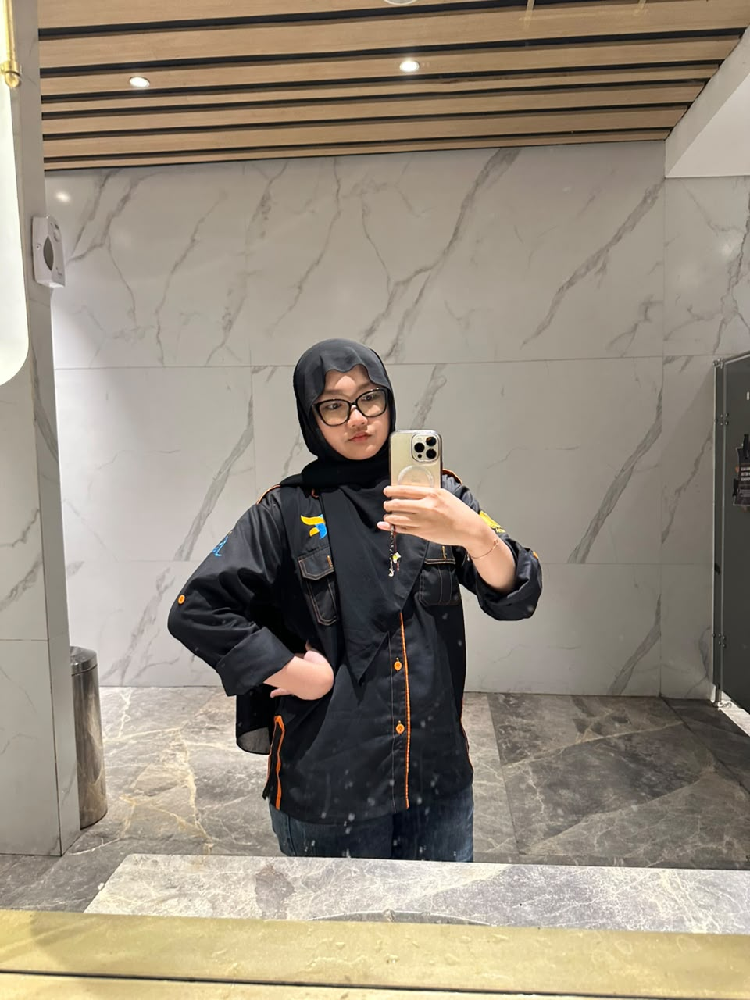

Hi, call me Adel. I'm a student at Universitas Negeri Surabaya majoring in Informatics Engineering, currently learning the fundamentals of blockchain, web development, AI, ML, and game development.
I'm especially curious about AI, ML and Blockchain technology, three fields I'm slowly diving into through personal projects and reading. Alongside the technical side, I also enjoy graphic design as a creative outlet, and I practice archery as my main hobby outside of screens.
I believe good technology is built by people who stay curious and keep building, this portfolio itself is part of that journey.